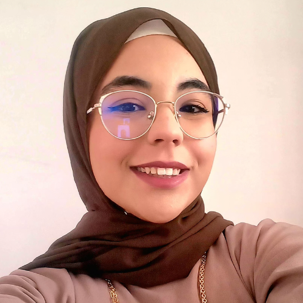
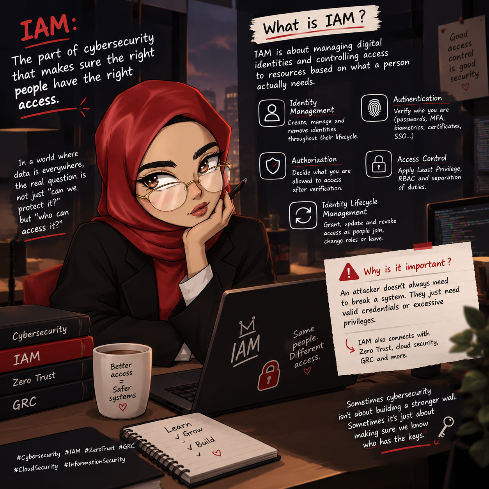
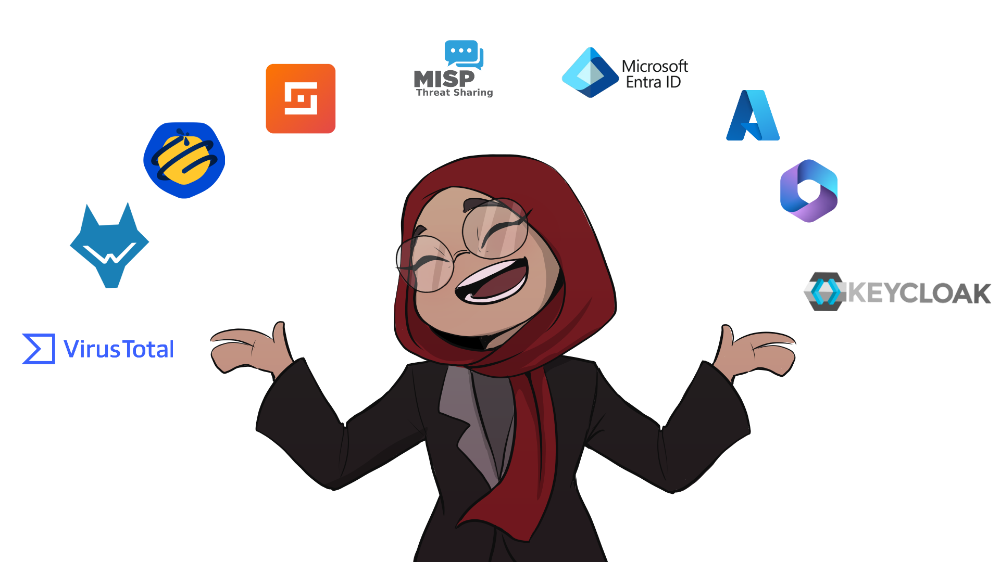

🛡️SOC / Blue Team
Détecter, corréler et répondre, de la collecte de logs à l’automatisation.
Savoir-faire
Outils
Disponible pour un PFE de 6 mois dès janvier 2027
>
Étudiante ingénieure en cybersécurité (ESPRIT), spécialisée en IAM, SOC et DevSecOps, avec une ouverture vers la GRC. Curieuse comme un chat, rigoureuse comme un audit, et artiste à mes heures.


Étudiante ingénieure en sécurité des réseaux et des données à ESPRIT, je recherche un stage PFE de 6 mois dès janvier 2027 en IAM, SOC/SIEM ou DevSecOps, avec une ouverture vers la gouvernance et la conformité. J’ai administré des identités avec Microsoft Entra ID, configuré Intune et Microsoft Defender, et conçu une application de planification de plus de 500 soutenances par semaine avec authentification unifiée et MFA.
J’ai déployé un SOC sous Wazuh avec trois playbooks de réponse à incident automatisés (temps de traitement réduit d’environ 37 %), construit une chaîne DevSecOps sur GitLab CI et réalisé un audit de sécurité HIPAA de 15 constats avec registre des risques. Mes projets récents incluent la mise en œuvre d’un SMSI ISO 27001 sur un cas pédagogique.
Quand je ne sécurise pas des systèmes, je fais du storyboard et de l’animation, en freelance et pour ma chaîne YouTube.
Du pilotage des risques au code : six domaines que j’ai pratiqués en projet, en stage ou en labo.
Détecter, corréler et répondre, de la collecte de logs à l’automatisation.
Savoir-faire
Outils
Gestion centralisée des identités, des accès et des terminaux.
Savoir-faire
Outils
Évaluer, documenter et prioriser pour rendre la sécurité mesurable.
Savoir-faire
Référentiels
Comprendre ce qui circule, filtrer, bloquer et superviser.
Savoir-faire
Outils
Intégrer la sécurité à chaque étape, du commit au déploiement.
Savoir-faire
Outils
Du fullstack aux scripts d’automatisation.
Langages & frameworks
Clique sur un projet pour voir les détails.
Nov. 2025 – mai 2026. Détecter, analyser et traiter automatiquement les incidents, avec audit final de conformité HIPAA.
Évaluer la posture de sécurité de la plateforme, estimer les risques et vérifier l’alignement avec HIPAA.
2026. Active Directory, Keycloak, midPoint et PingCastle.
2026. Sécuriser une application Flask volontairement vulnérable, du commit au déploiement.
Projet personnel reproduisant les fondamentaux d’un SOC, de la collecte de logs à la réponse automatisée.
Mettre en place un SMSI conforme à ISO/IEC 27001:2022 pour une société de paiement fictive, de l’analyse des écarts à la déclaration d’applicabilité.
Projet d’équipe : une application web et une application desktop partageant la même base MySQL et la même logique métier.
Storyboard, animation et illustration : l’autre moitié de moi.

Moteur de planification (OR-Tools) pour plus de 500 soutenances par semaine, trois portails (Coordinateur, Enseignant, Étudiant) avec authentification unifiée Entra ID et MFA, notifications Outlook via Microsoft Graph, CI/CD GitLab.
Administration des identités, accessibilité (synthèse vocale, sous-titres, lecteurs d’écran) et module d’IA générative pour quiz personnalisés.
Politiques Intune sur Android, Windows et Linux, règles Defender, Microsoft Compliance et politiques de sécurité Azure.
Infrastructure d’environ 10 machines virtuelles et 2 VNet, connexions VPN et dépannage réseau.
Interfaces web en HTML, CSS et JavaScript, validation de formulaires et comportements dynamiques.
Deux certifications Cisco obtenues, trois autres en préparation ce semestre.
Obtenues
En préparation (semestre actuel)
Langues
Un PFE de 6 mois en GRC, IAM ou SOC, dès janvier 2027 ? Parlons-en.
Disponible dès janvier 2027PFE de 6 mois en cybersécurité (GRC, IAM, SOC). Je réponds vite, de préférence par email.